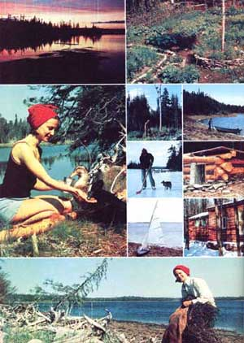

We Homestead An Island
A couple who started out penniless managed to create a beautiful island home.
By David Vanderzwaag
March/April 1978
At one time or another, almost everyone has dreamed of living in his or her own private island paradise. Maybe it's because TreasureIsland or Robinson Crusoe once captured our imagination. Maybe it's because we've just become fed up with the pollution and crime and constant hassles of modern society. Or maybe it's just because. Whatever, it's nice to know that the more adventurous souls among us are still making that particular dream come true.
My greatest content would be to desert all human society. I would retire ... to a solitary island in the sea, would build a boat and shut upon my retreat the flood gates of the world.
Shelley
If you've ever wanted to own and live on your own island ... well, stop dreaming about it! My wife and I are proof positive that such an idle fantasy can be converted into delightful reality. Or, to put it another way: If we could buy and homestead our very own island, anybody can.
WE WERE PENNILESS WHEN WE MADE THE JUMP
A few years ago, when I was still a penniless theological student, Cindy and I and another couple fell in love with McLeod's Island ... a 90-acre chunk of North American wilderness off the coast of Cape Breton Island, Nova Scotia, Canada. Although the asking price for the water-bounded piece of property was only $5,800, or $2,900 per couple ... that was about $2,900 more loose cash than Cindy and I had to our names at the time.
Still, it never hurts to ask. And we did ask a local banker (we lived in Now Jersey at the time) about the possibility of a loan. And he did take pity on a couple of poor Mother Earthers. And we did get the money! Hey! We were home free! We could buy our island! Buoyed up as we were by our incredible good fortune, we had no trouble putting in the necessary time at YMCA odd jobs (everything from pool attendant to camp counselor) to earn the dollars we needed to make the monthly payments on the loan.
By the time I graduated from school (June 1974), we had received our Canadian immigration papers ... and we were ready to retire to McLeod's Island (our island!) for a summer of diving, foraging, and tree chopping.
It was a glorious summer. But we did still owe $2,000 on the property, so-in October-we began a now phase in our lives: For the next one and a hall years, we slaved away the weeks in the city (Sydney, Nova Scotia) and spent our weekends finishing off a log cabin out on the island.
Finally, In May of 1976?at last!-we had the bills all paid and were ready to live on our island full time. So we packed a tailless cat, two ducks, and ten chickens into a two-place kayak ... and paddled off to paradise.
PARADISE HAS A PRICE ...
Lost I make our current way of life sound too Idyllic, let me point out that certain dues (in addition to the original purchase price) must be paid by anyone who attempts to live as we now are able to do.
The sea, you know, is not called "restless" for nothing. A glass-smooth bay (as we've learned so well!) can churn-sometimes seemingly in seconds-into a windswept chaos of currents and combers. We've also seen that same bay (the one in which our island is located) thaw and then completely refreeze in just hours on a single December day.
In short, when you live as Isolated and as close to the elements as we currently do, you quickly learn to become very self-reliant. You always have your ears tuned to marine weather forecasts on the radio. And your eyes just naturally develop the habit of constantly scanning the horizon for down-home atmospheric clues that you can use ... things like "mackerel sky, not 24 hours dry" or "red in the east, not fit for man nor beast'.
Then too, when a blow does come, it's not enough to simply know about it as soon as possible. You must also have the physical strength, skills, and equipment you'll need to "batten down all hatches" -protect your livestock, garden, cabin, and other possessions -before and during the storm.
For instance: We didn't buy (used, for $100) that two-place kayak I mentioned earlier just because it was a "groovy" boat. Its 16-foot length, built-in flotation chambers, and low center of gravity make the light, canvas skiff one of the safest boats available (a German doctor crossed the wild Atlantic in a craft of this type in 1956). And that's important to us ... especially when we're forced to go out on our bay in higher seas than we might prefer.
Another example: Our second boat?a 12-foot, beamy dory that we purchased from a lobsterman for $75?will carry far more than the kayak and really comes in handy when we want to ferry visitors or stocks of groceries out to our Island. The dory, however, is far less seaworthy in rough water than our two-place boat.
Which means-since sea winds usually pick up around here in the afternoons-that we generally shove off for town and a load of supplies or guests on a calm morning ... and don't plan on returning until late that evening. It also means that we always give our visitors three possible pickup dates ... and then meet them at the mainland wharf on the best weather day of the three, with the warning "be prepared to stay a night or two extra If we have gales". And it further means that we always wear divers' wet suits during cold weather (lifevests, of course, are a must at all times), just in case we're capsized into the frigid water.
Yet another case In point: Winters up here can be especially variable. Continual spring-like thaws throughout 1976's cold season, for instance, kept our bay filled with slushy ice that was too thick to push a boat through ... but too dangerous for even a fox to walk on. We were marooned for three full months, from the first of January until the end of March. Last winter's record cold snap, on the other hand, filled the bay so solidly with pack ice that we could hike back and forth to the mainland for our mail and tobogganloads of supplies any time we wanted.
As a result-no matter what we think the next few months' weather might be like-we've learned to stock up in November with enough "boughten" goods to run us through the winter. extra grain for the chickens, pellets (stored in garbage cans) for the rabbits, 30 pounds of salt mackerel and 15 of salt cod (available from fish plants and storable at room temperature), powdered milk, flours, 15 pounds of butter (refrigerated outdoors by nature), rice, raisins, six gallons of kerosene for the lamps, extra matches, saw blades, and radio batteries. All this, in addition to 124 pints of assorted home canned vegetables, 24 pints of wild berry purees ... and heaping mounds of turnips, cabbages, parsnips, carrots, and potatoes.
And a final example: We have an inexpensive walkie-talkie that we keep in good working order and which we use to check in with a mainland neighbor twice a week ... just in case we're suddenly hit with a serious illness or accident that we can't handle alone. So far we've never had such an accident and our relative isolation has kept us far enough away from all the "urban" germs on the mainland to ensure disease?free winters for the both of us. But that doesn't mean we'll be as lucky next year as we've been in the past ... and it's always better to be safe than sorry.
Are all these changes in our schedule to fit the weather and the precautions we take a bother? Yes, they can be. But some people are willing to pay this price and some aren't in exchange for the privilege of living on their own island. We happen to be two of the folks who are willing to "sacrifice" a few of civilization's "comforts" for the freedom and liberty we receive in return. It's as simple as that.
... BUT IT HAS ITS FORAGING BENEFITS TOO!
In addition to the splendid isolation from most of the modern world's cares that we enjoy, our island furnishes us with a great many other forms of wealth. The sparkling blue waters which surround us, for example, abound with I seafood delicacies ... free for the taking!
We can jig with a fishing rod almost any time we want for cod, mackerel, and flounder. And a local fisherman (no, we're not completely isolated!) stocks our frypan with all the herring we can eat, in exchange for our surplus eggs. It only took a minor investment in fins, masks, and wet suits (about $40 per person for the used equipment we bought) to outfit ourselves well enough to feast day after day after day on the scallops, Jonah crabs, and blue mussels that thrive just off our isle's shore. And at low tide, millions of steamer clams just wait for us to dig them out of our property's muddy inlets.
Nor does our foraging stop at the water's edge. Lamb's?quarters, sea blite, beach peas, plantain, and other sea-salted greens crowd each other on much of the land above the island's tide mark. (We can the beach peas and lamb's-quarters for winter use.) Raspberries, blueberries, gooseberries, and rose hips all grow wild on our property's meadows ... and they're all free of the roadway dust and leadladen fumes that taint their side-ditch counterparts on the mainland. We harvest all these volunteer edibles (and others!) according to the directions and suggestions in Euell Gibbons's excellent wild food books.
And we're not the only ones who enjoy this foraging! Our rabbits cherish the wild greens we feed them, especially the salt hay which edges our island's tidal pool. The ten chickens pick up extra calcium from some of our crushed clam shells and gobble down all the leftover fish innards we'll throw them. Our two (soon to be more) mallard ducks have grown chubby eating the minnows that teem in our tidal pool. And our cat's favorite dish has become (are you ready for this?) steamed Nova Scotia clams on the half shell. Furthermore, if we ever decide (as many Cape Breton farmers have) to bring cattle and sheep to our offshore island for summer grazing ... we'll be able to just "turn 'em loose" and let 'em forage for themselves (no fences needed).
... AND ITS GARDENING "EXTRAS"
Other than adding wood ashes, rabbit manure, and chicken dung to our acidic, heavy clay soil ... we've relied entirely on seashore finds to lighten and enrich the VanderZwaag family vegetable patch.
In the early spring, we gather bushels of broken crab and mussel shells, which we pulverize with a wooden mallet right over the 30' X 70' garden. This not only lightens the soil's texture, but adds much-needed lime as well. (Unless the shells are crushed or ground, they break down far too slowly to be of much use to the clayey soil.) We also dig buckets of unrinsed sea sand into the vegetable patch to further aerate the heavy earth.
A shallow island cove supplies our seashore fertilizer ... wheelbarrow loads of rich mussel mud (a black ooze of rotted seaweeds, clam excrements, and whatever else ale Neptune throws in for good measure). This we gather at low tide and shovel?without rinsing -directly into the garden. Our plants thrive on it.
When each summer's vegetable crop is growing like sea monsters, we mulch the garden with a few-inches-thick layer of eelgrass ... a ribbon-like seaweed which is continually tossed up on shore-by the ton-near our cabin.
Eelgrass is also the secret of our "no dig, no mess, no work" annual potato crop. We just till the potato patch lightly in the spring, add a few Inches of the foraged grass, lay seed potatoes on the bed, and cover them with four to five additional inches of the mulch. That's it until harvest time ... when we simply pull back the mulch ... and pick up bushels of the clean, uniform, weed-free spuds. Folks have been growing potatoes in Nova Scotia this way ever since the first Scottish settlers mulched their spuds in this manner on their newly cleared, still-stump-ridden, shirttail farms.
Other "seashore" gardening help that we enjoy includes the salt water itself, which we sprinkle lightly on newly formed cabbage heads to discourage otherwise-pesky cabbage worms. Even the old tires which occasionally wash up on our beach are useful: When filled with dirt, they make excellent "raised beds" for tomatoes (the black rubber casings readily absorb solar radiation, which heats the soil they contain ... a vital factor in our never-ending effort to take the maximum possible advantage of Nova Scotia's all-too-short growing season).
Nor must we forget to mention yet another way in which foraged eelgrass contributes to each year's harvest of homegrown vegetables: Heaps of the "insulation" protect our root vegetables from winter freezes until we're ready to eat them. (And other wheelbarrow loads of the grass-when banked against our cabin's foundation-keep cold January winds out of the house.)
EVEN OUR CABIN WAS EASIER TO BUILD HERE ON THE ISLAND
The snug, two-room log house that we call home was a lot less trouble and a great deal less expensive to build out here on McLeod's Island than if we'd constructed it inland somewhere. Why? Because we cut and trimmed out the tree trunks for its walls two miles down shore ... and then leisurely floated the timbers to the cabin site behind our boat.
Not to mention the fact that most of our windowsill lumber was "scrounged for free" driftwood that we picked up on the beach. Or that five washed-up railroad ties serve as steps to the cabin. Or that the dozen creosoted planks which came in on the tide after one particularly severe gale were just what we needed to finish off other parts of the house. Or that old crates?tossed overboard from passing ships-are all we've ever needed in the way of dressers and drawers. Or that the thousands of flat stones we used in our cabin's foundation, in the casing for our freshwater well, and in the wall around the garden ... all came "ready to use" right from our island's own beach.
Likewise, our chickens, rabbits, and ducks (during stormy weather) are housed in log homes of their own ... log homes built almost entirely from materials obtained right here on our little island. We even make part of our winter's supply of firewood do double duty: Before we burn it (last, at the end of the season), we leave that firewood stacked through most of the icy weather on both the inside and the outside of the 10' X 14' building that houses the rabbits and chickens. Which means that the wood serves a several-months-long "apprenticeship" as insulation ... before it finally winds up in the stove, heating our cabin!
CRAFTING AND RECREATION ARE BUILT RIGHT INTO OUR WAY OF LIFE
We're constantly amazed at the many other ways our island provides us-for free!?with the Good Things in life that most North Americans now have to pay outrageous prices for. Compare:
While others scrimp and save all year long, then cram children, pets, and beach balls into the station wagon for a frantic two-week vacation ... we're free?twelve months a year-to take a zesty plunge into the surf or drop a line into crystal-clear waters any time we want to. And all only a few feet from our front door. And when we get tired of that, there's all those miles and miles of spruce-rimmed shoreline and secluded beaches "out there" constantly tempting us to explore them. And when that gets boring, we can just hop into Yaki?our two-place kayak-hoist the little boat's sails ... and go "yachting" around the bay for hours at a time.
And, of course, we do all this exploring and sailing in what can only be described as our own private wildlife sanctuary. McLeod's Island is always alive with thousands of sea birds. Gulls glide and circle above, Arctic terns dart and dive for minnows below, and ospreys and bald eagles ride the air currents high above the island's clay cliffs. Have you ever seen a cormorant basking on a buoy or manicuring its oilless, outstretched wings? Or heard loons serenade the woods at twilight while hundreds of blue herons-settling into their rookery-begin a raucous argument that you know will keep you awake far into the night? Or seen deer tiptoeing along gravel bars and nibbling salt hay in the misty mornings?
We have all these wonders at our command ... and?because our island is such a delicately balanced ecosystem-we refrain from using noisy power tools and rely, primarily, on our silent and nonpolluting kayak for transportation. In exchange for this thoughtfulness, the birds and animals of McLeod's Island have accepted us as part of the natural environment ... and reward us with daily shows that are far more entertaining than any TV special.
This "bonus" wealth that we enjoy on a day-to-day basis extends right down to our sparetime craft activities. We have an unlimited supply of driftwood, shells, sea urchins, starfish (dead, of course), and other scavenged material to work with. By nailing a chunk of the wood to a base, gluing on some pebbles and shells, adding?perhaps-a tin can covered with shell fragments, and giving the finished piece a coat of varnish ... beautiful centerpieces, flowerpots, and pencil holders can be created. Then too, lobster boats, fishing villages, and out-of-the-way coves make good subjects for photographs and paintings. In short, we have all the raw materials we need for more sparetime hobbies than we'll ever get around to ... and those hobbies are both absorbing and a source of extra money (tourists readily purchase the kinds of handicrafts I've just described).
IT'S EASY TO MEET OUR CASH MONEY NEEDS
By now it should be obvious that our way of life has made us largely self-sufficient and that we don't need much money to pay for the taxes on our island and the few groceries and other supplies we buy. It only takes about $10 a week, in fact, to cover our basic expenses ... and Cindy more than earns that with the $15 a week that a local paper pays her for her "Leisure Time" column. (The feature-kind of a mini-MOTHER -tells the newspaper's readers how to do everything from making potato prints to brewing up a batch of homemade wine.)
Everything else we earn is gravy: from our driftwood "objets d'art", from the sketches we do, from the quilted potholders we make on long winter evenings, and from the note cards we've designed (and which we have printed by mail by none other than MOTHER's Print Shop). So we always seem to have enough funds on hand to dip into when we suddenly need to make an emergency repair on a piece of equipment or we find ourselves suffering so severely from "cabin fever" that we simply must make a quick trip back to New Jersey to visit family and friends.
WHAT MORE IS THERE IN LIFE?
Yap. We think we're living the Good Life ... as good a life as any would-be Crusoe can live in this day and age. And we've done it all on what can only be described as the proverbial shoestring.
So if you've been spending too many unhappy years clubbing down the urge to find your own Treasure Island ... what are you waiting for? Islands, like everything else, have gone up in price since we bought ours ... but there are still some real bargains on the market (someone acquired a three-acre isle near ours last year for only $200).
Get out there off the coast of your fondest dreams and start looking for the little piece of heaven you've been hungry for. You may have to scratch some to find it ... but it's probably just waiting for you to make that first contact. After that (if our case is any indication), anything is possible.
More specifically, if you're interested in an island off the coast of Nova Scotia, we suggest you write to the Halifax- Dartmouth Real Estate Board, 6132 Quinpool Road, Halifax, Nova Scotia, Canada. The good folks there will quickly forward your request to realtors all across the province.
Have you always wanted to live on an island? Then make it happen! We did. As Thoreau once said: " . . . if one advances confidently in the direction of his dreams, and endeavors to lead the life he has imagined, he will meet with a success unexpected in common hours".
 |
 |
|